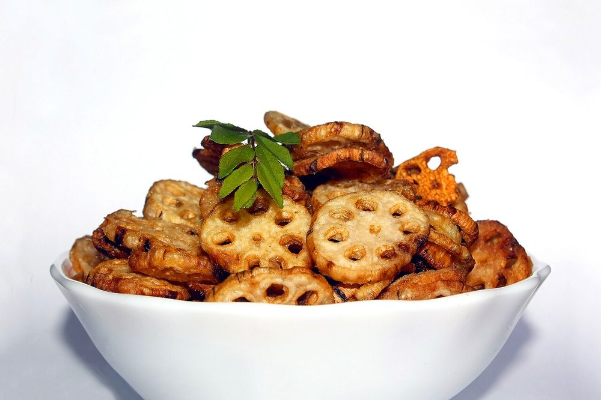

Bhee Patata
rhizome and potato braised down in a dry onion-tomato masala until the edges catch

Allergens: none of the ten listed below
Checked against the ingredient list for ten allergens: milk, egg, fish, crustaceans, tree nuts, peanuts, sesame, mustard, soy and gluten. Brands vary, so read the label on anything new to you.
Ingredients
Quantities for 4.
- 400g, peeled and cut into 1cm rounds Lotus Stemsliced into coins; keep in water so it does not brown
- 3 medium, cut into thick fingers Potato
- 2 large, finely chopped Onion
- 3, chopped Tomato
- 6 cloves, crushed Garlic
- 2cm piece, grated Ginger
- 2, slit Green Chillioptional
- 1/2 tsp Turmeric
- 1.5 tsp Coriander Powder
- 1 tsp Chilli Powder
- 1 tsp Cumin Seeds
- 1 tsp Amchur
- 3 tbsp, chopped Coriander Leavesoptional
- 4 tbsp Neutral Oil
- 3/4 cup Water
- to taste Salt
Cookware
stovetop, kadhai
Before you start
- Scrub the lotus stem hard before peeling. The hollow channels running through it trap river mud, and it is gritty if you skip this. Slice into 5mm coins.
- Boil the lotus stem coins in salted water for 20 minutes, until a knife enters against slight resistance. It stays crisp however long you cook it, so do not wait for soft. Drain and dry them well. Wet slices will never brown.
- Cut the potato thick, in fingers rather than cubes, so it survives the long braise without disintegrating.
Method
- Heat the oil in a kadhai and crackle the cumin seeds, about 20 seconds.
- Fry the par-boiled lotus stem coins and the potato fingers on medium-high for 8 minutes, turning once or twice, until patched with gold. Lift them out.Do this in two batches if the pan is crowded. Steamed vegetables here mean a bland, pallid dish.
- In the same oil, fry the onion 8-10 minutes until properly brown at the edges, not merely soft.
- Add the garlic, ginger and green chilli and fry 1 minute, until the raw garlic smell goes.
- Stir in the tomato, turmeric, coriander powder, chilli powder and salt and cook 6-8 minutes, until the mass darkens and oil pools at the sides.Wait for the oil to separate. This is the point at which the masala stops tasting of raw tomato.
- Return the vegetables, turn them through the masala, add the water and cover.
- Cook on low 12-15 minutes, shaking the pan rather than stirring, until the potato is tender and almost no liquid remains.Stirring breaks the potato into mush. Shake and tilt the pan instead.
- Uncover, raise the heat and let it fry dry for 2-3 minutes so the underside catches and crusts.
- Sprinkle over the amchur and coriander leaves, toss once and take it off the heat.
Storage
Keeps 2 days refrigerated. Reheat uncovered in a pan over medium heat so it crisps again rather than sweating. This is a dry dish and it suffers in the microwave.
Nutrition Good estimate
Low protein: 8+ g a serving, 9% of the calories
| Per serving431 g | Per 100 g | |
|---|---|---|
| Calories | 363+ kcal | 85+ kcal |
| Protein | 7.9+ g | 2+ g |
| Carbohydrate | 54.7+ g | 13+ g |
| of which sugars | 7.8+ g | 2+ g |
| Fibre | 11.1+ g | 3+ g |
| Fat | 14.7+ g | 3+ g |
| of which saturated | 1.6+ g | 0+ g |
| of which unsaturated | 12.2+ g | 3+ g |
The + means ingredients given to taste rather than by weight are counted as zero, so the true figure is a little higher than shown. Worked out from the listed quantities; most of the ingredient list could be weighed. Ingredients given to taste rather than by weight are counted as zero, so the real figure is a little higher than this. The + says so. Some ingredients have no exact match in the nutrient database and use the nearest equivalent: amchur. Estimated from raw ingredients using USDA FoodData Central. Cooking changes are not modelled, and added salt is excluded, so sodium is not given.
Written and checked against sources, not cooked in a test kitchen. Times, yields, allergens and nutrition are worked out rather than measured, so use your own judgement on doneness and on storing. More in About.